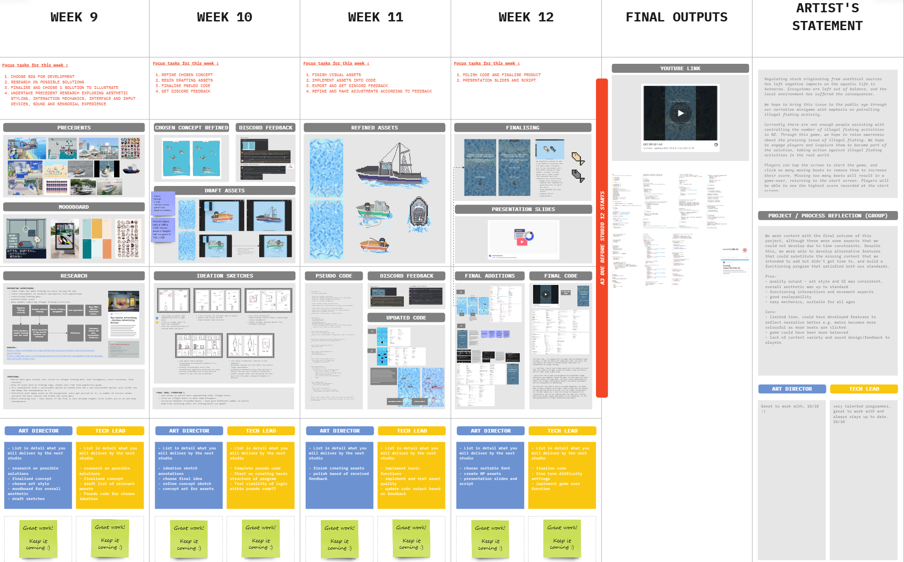
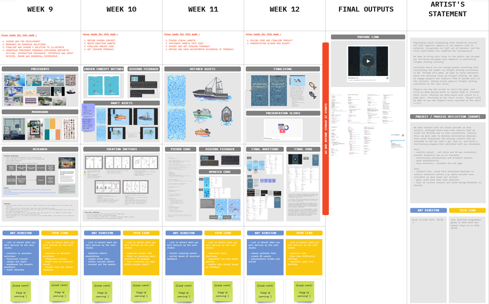

DES240 - Designing with Data
Brief
In Design 240 - Designing with Data, our task was to create a bus stop advertisement to raise awareness about a chosen statistic related to New Zealand. The statistic I chose for this project was "17.2% of NZ fish stock is overfished." As someone passionate about marine life and fishing, this statistic resonated deeply with me. The project aimed to highlight the issue of overfishing and its impact on New Zealand's aquatic ecosystems. By creating an interactive and engaging advertisement, we hoped to draw public attention to this pressing environmental concern.
Role and contribution
The tool we used for this project was Processing, a free graphics library and integrated development environment. Within our two-person team, I was responsible for the technical aspects of the project, including brainstorming ideas, planning, writing, and debugging code. My teammate served as the art lead, focusing primarily on creating visual assets and designing the overall aesthetic of the project.
Process and Methodology
For this project, we adapted the Design Thinking Process, which consists of five stages: Empathise, Ideate, Design, Prototype, and Test. This methodology allowed us to rapidly prototype and iterate on our ideas, which was particularly beneficial given the tight timeframe of three weeks. Balancing this project with other commitments further emphasised the need for an efficient and flexible workflow.
Challenges and Solutions
Throughout the project, I encountered several technical challenges. One of the main issues was randomizing the spawning of boats around the map. Initially, there was an error with randomizing enums, which I resolved by using float values and calling the enums based on those values. Another challenge was creating the overlay effect. The tint() function in Processing was not well-documented, making it difficult to implement. As a workaround, I manipulated the opacity of the elements to achieve the desired visual effect.

Results and Impact
Regulating fish stocks originating from unethical sources has been a significant challenge in Aotearoa, leaving negative impacts on aquatic life. Overfishing disrupts ecosystems, leaving them unbalanced and causing long-term harm to the local environment. Our project aimed to bring this issue to the public eye through an interactive narrative minigame that emphasizes patrolling illegal fishing activity. Currently, there are not enough resources or people dedicated to controlling illegal fishing in New Zealand. Through this game, we hoped to raise awareness about the issue and inspire players to take action against illegal fishing in the real world. In the game, players tap the screen to start and click on moving boats to remove them, increasing their score. Missing too many boats results in a game-over, returning players to the start screen where they can view the highest recorded score.
Reflection
We were satisfied with the final outcome of the project, despite some aspects that we couldn't develop due to time constraints. To compensate, we implemented alternative features that maintained the functionality and engagement of the program. Overall, we were able to create a functioning project that met our standards and effectively communicated the issue of overfishing. This project taught me the importance of adaptability and problem-solving in design and development. Working within a tight timeframe and overcoming technical challenges reinforced my ability to think creatively and find practical solutions. It also deepened my understanding of how interactive media can be used to raise awareness about critical environmental issues.
Project link can be found here: https://github.com/name163/240_A3


 

Contact
Get in touch with me at: saxonz17323@gmail.com